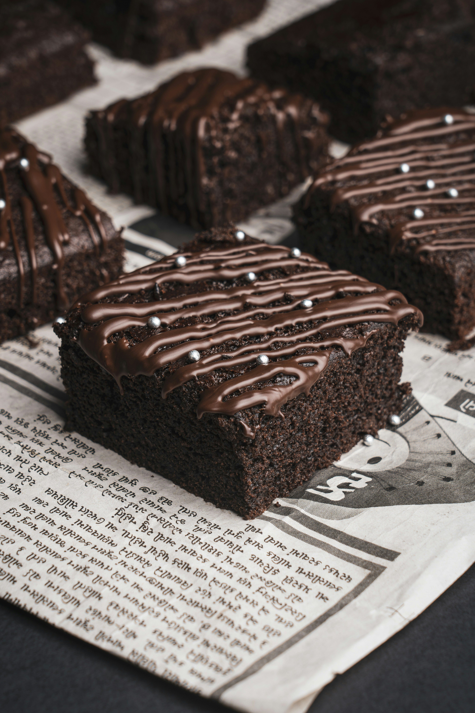

Home
Bada$$ Brownies

without weed
Its important to note that at the beginning. I foudn this recipe in my backyard while shoveling a hole for...something. Don't worry about it. Matter of fact, just make these brownies and forget all about me.
Ingredients
- ½ cup butter
- 1 cup white sugar
- 2 large eggs
- 1 teaspoon vanilla extract
- ⅓ cup unsweetened cocoa powder
- ½ cup all-purpose flour
- ¼ teaspoon salt
- ¼ teaspoon baking powder
Frosting:
- 3 tablespoons butter, softened
- 3 tablespoons unsweetened cocoa powder
- 1 tablespoon honey
- 1 teaspoon vanilla extract
- 1 cup confectioners' sugar
Directions
- Preheat the oven to 350 degrees F (175 degrees C). Grease and flour an 8-inch square pan.
- Melt 1/2 cup butter in a large saucepan.
- Remove from heat, and stir in sugar, eggs, and 1 teaspoon vanilla.
- Beat in:
- 1/3 cup coco
- flour
- salt
- baking powder
- Spread batter into prepared pan.
- Bake in the preheated oven until top is dry and edges have started to pull away from the sides of the pan, about 25 to 30 minutes. Let cool briefly before frosting.
- To make the chocolate frosting:
- Combine softened butter, confectioners' sugar, 3 tablespoons cocoa, honey, and 1 teaspoon vanilla extract in a bowl.
- Stir until smooth. Frost brownies while they are still warm.
- EAT that sh*t, son!